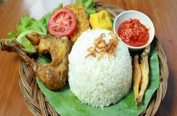

< < Daftar resep
bahan |
cara memasak
Nasi Uduk Ayam Lalapan

Nasi Uduk adalah makanan khas Betawi. Berbeda dengan nasi putih pada umumnya, Nasi Uduk tidak terlihat putih dan butiran nasinya tidak lengket satu sama lain. Hal itu dikarenakan proses memasak beras yang terlebih dahulu diaron dengan menggunakan air santan, daun salam, daun jeruk, laos, dan serai, untuk kemudian dikukus hingga matang. Hasilnya, rasanya pun menjadi gurih dan beraroma harum.
Hidangan ini biasanya disajikan dengan taburan bawang goreng, dengan lauk berupa ayam goreng, tahu dan tempe goreng, sambal kemiri kental berwarna kemerahan yang rasanya pedas, serta daun kemangi. Kadang-kadang dilengkapi juga dengan sambal bercampur kecap manis.
Bahan-bahan:
- 2 kg beras sdh dicuci bersih
- 2 bungkus Santan Kara kecil
- 1 bungkus royco
- 1 btg sereh
- Ayam bagian paha 2kg
- 1 sdt ketumbar
- 6 siung bawang putih
- 1 ruas kunyit
- Garam,gula,penyedap
- Tomat
- Cabe
- Tahu & Tempe
Cara Memasak:
- Pertama2 kita buat nasi uduk terlebih dahulu..cuci bersih beras tiriskan lalu masukkan santan,
air secukupnya,salam,sereh,laos garam penyedap.masak menggunakan rice cooker.jika uap mengepul diatas aduk2 nasi.
masak hingga matang.
- Cuci bersih ayam lalu bumbui dg bumbu halus beserta garam,penyedap rebus ayam hingga lunak air menyusut.lalu goreng dg minyak panas tiriskan.
- Cuci bersih cabe,tomat,bawang,goreng semua n haluskan beri garam,penyedap n gula.
- Susun semua diatas piring lalu hidangkan
kembali keatas
< < Daftar resep